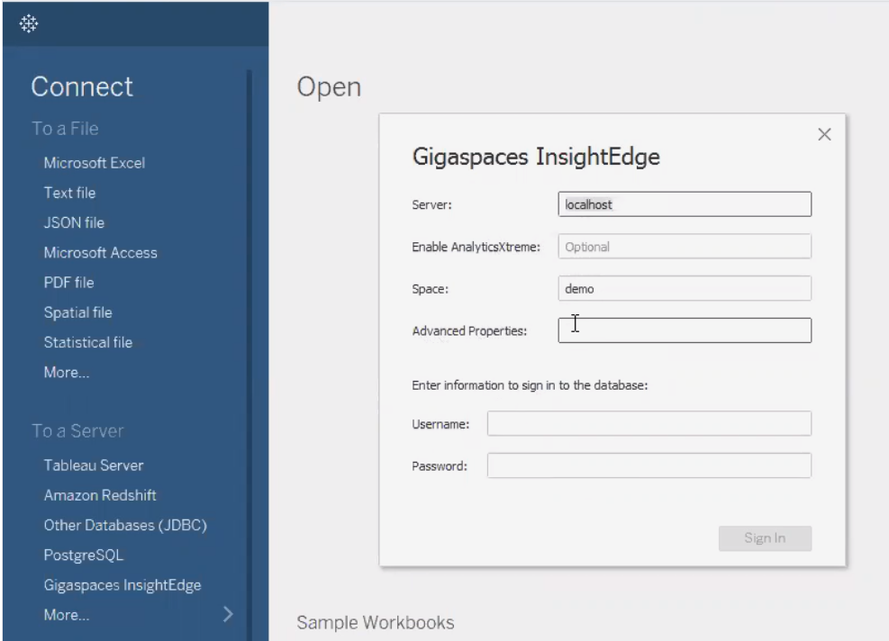

This topic describes how to integrate Tableau Desktop with
Your host machine must have the following installed:
Java 8 or higher
Tableau version 2019.1 or higher
(MacOS only)
The
The integration package is available in the <product>/tools/tableau folder of the
gs-tableau.bat - runs the setup process for the gs-tableau-env - environment variables that can be used to customize certain default values for the setup process.gs-tableau-package - script that creates a standalone connector package.In Tableau 2020.2 and later, a class loader isolation option was introduced.
It is necessary to disable this option by editing the gs-tableau.bat script as follows:
Under :RUN_TABLEAU, add this parameter to the "start" line:
-DJdbcDriverCustomLoad=false
The
To setup the <product>/tools/tableau/gs-tableau.bat script.
The first time this script runs it requires elevated permissions, because it automatically packages and copies the Program Files folder.
If necessary, you can customize some of the default setup process values, such as the location of the Tableau installation folder or the JDBC driver heap size. To do this, open the product>/tools/tableau/gs-tableau.env script and edit the required environment variables.
If your organization includes Tableau Desktop users who aren't developers (for example, data scientists that don't need
To create the connector package, run the gs-tableau-package script from the <product>tools\tableau folder. This package can then be distributed and installed on any machine to enable accessing
In order to integrate Tableau Desktop with
To add the
If the JDBC driver was not yet created, run the following command to create the insightedge-jdbc-client.jar file.
<product>/tools/jdbc/build-jdbc-client.shRun the following command to copy the JDBC driver to the Tableau Drivers folder.
cp <product>/tools/jdbc/insightedge-jdbc-client.jar<TABLEAU_HOME>/DriversRun the Tableau Desktop application with a pointer (the -DConnectPluginsPath system property) to the
"/Applications/Tableau Desktop 2019.2.app/Contents/MacOS/Tableau" -DConnectPluginsPath=$To configure the data source after Tableau Desktop is started:
Click Connect in the Tableau desktop, and select Gigaspaces InsightEdge as the data source.

If Gigaspaces InsightEdge does not appear in the Connect menu on first access ,click More and select Gigaspaces InsightEdge from the alphabetic list.
If your system is configured with a secure Space, type the Username and Password.
For more information about secure Spaces, see the Security section of the Administration guide.
Click Sign In to connect to the
Verify that Tableau Desktop can see the tables in your Space.
If your data source uses POJOs, they must be configured for java.sql.Date rather than java.util.Date.
After the setup process is complete and the connection has been configured, you can execute queries against the
|
|
|
Predictive Stock Pricing Demo |